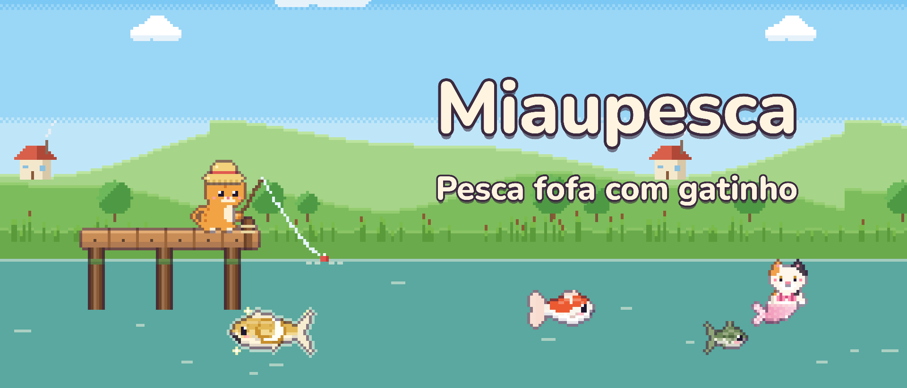
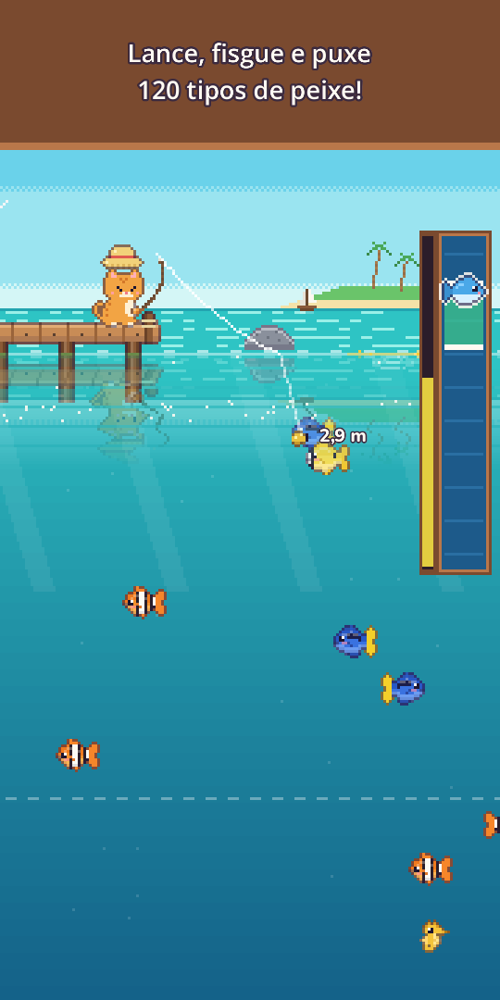
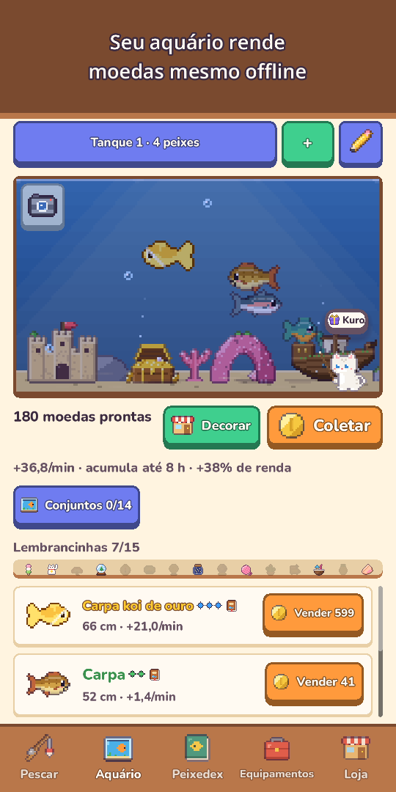
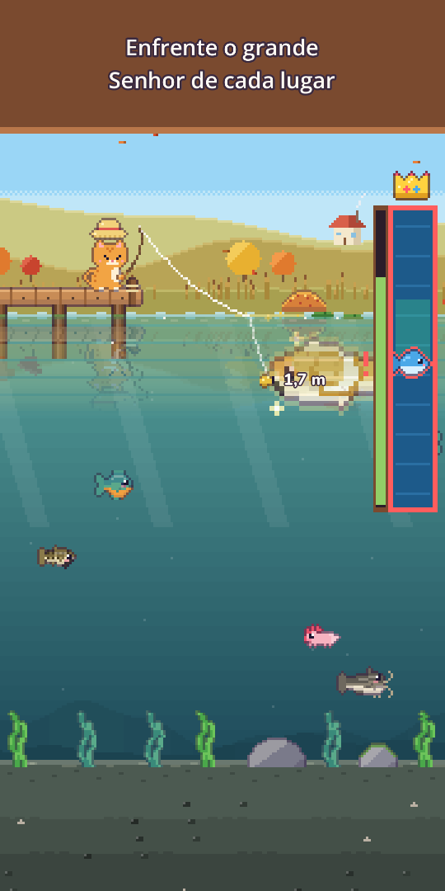
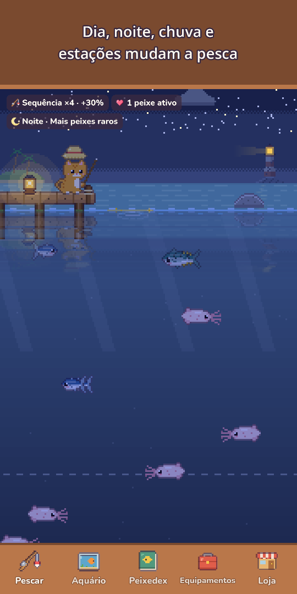
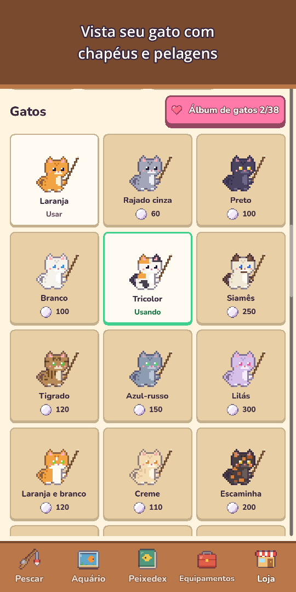
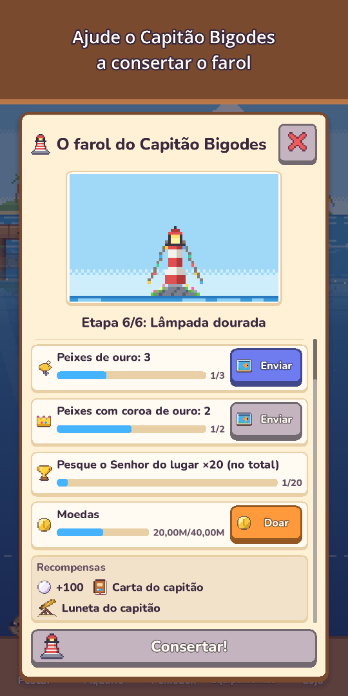
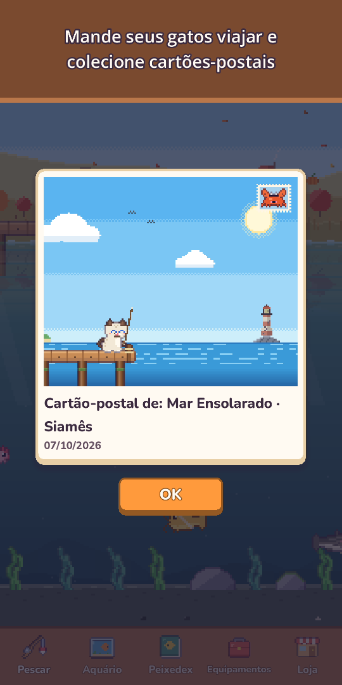

Miaupesca: Pesca de Gato
Pesca fofa com gatinho
Pegue a vara e a roupa de mergulho! Pesque 120 espécies, mergulhe para fotografar a vida marinha e conheça raros gatos sereia.








Pegue a vara, gatinho: a água está cheia de surpresas!
Miaupesca é um jogo de pesca aconchegante em pixel art para jogar com um dedo só. Lance a linha, guie a isca até os peixes que você vê nadando e puxe com uma barra de captura super gostosa de jogar.
- Pesca com um dedosegure para lançar, arraste para guiar a isca, segure para puxar. Toque quando a boia afundar para sair na frente (opcional), com ondinhas, respingos, vibração e moedas voando para a sua carteira
- 120 espécies em 10 lugaresLagoa do Campo, Rio da Serra, Mar Ensolarado, Recife de Coral, Lago Congelado, O Abismo, o Templo Submerso, o Lago das Nuvens, a Ilha do Vulcão e o Manguezal
- Encontre peixes dourados, cardumes de peixes raros e lendas como a Carpa da Lua e a Baleia Estelar, e enfrente uma vez por dia o grande Senhor de cada lugar
- Mergulhovista a roupa, nade em cada local para fotografar criaturas que não dá para pescar e complete seu Álbum de fotos. Com a lanterna, ache cavernas profundas escondidas
- Gatos sereiacada local tem um gato sereia, mais raro que qualquer lenda. Leve-o para o aquário ou solte-o para ganhar uma bênção de sorte
- 25 iscas em 5 níveisiscas melhores atraem peixes mais raros, há iscas especiais para sereias e lendas, e um peixe forte pode até arrebentar a linha!
- Um céu vivoo dia e a noite seguem o seu relógio, chuva, neve e arco-íris mudam a pesca, as estrelas cadentes dão pérolas, e as estações e a lua real mudam a paisagem. Cada ponto mostra a previsão de 6 horas e ondinhas douradas marcam onde os peixes grandes mordem
- Peixedexmuitos peixes têm seu horário favorito (noite, chuva, amanhecer ou estação), suas maiores capturas ganham Coroas de ouro e cada primeira captura guarda o céu daquele dia: hora, clima, estação e lugar
- Aquárioseus peixes rendem moedas mesmo com o jogo fechado. Decore com Navio naufragado, Arco de coral e mais, complete conjuntos para render mais, compartilhe Layouts do aquário com um código curto e toque num peixe para ver onde foi pescado e há quantos dias estão juntos
- Vida de gato e coleçãochapéus do Chapéu de sapo à Coroa, pelagens, chapéus de temporada e um Cantinho do gato aconchegante. Mande um gato da família numa Viagem felina de 3 horas atrás de cartões-postais pixelados e leia o Diário felino quando voltar
- Vizinhos e festasgatos vizinhos visitam seu aquário e deixam lembrancinhas, e a Amizade traz falas novas, presentinhos e um chapéu de amizade. Torneio semanal, Pesca em grupo todo mês, o Peixe visitante da semana e 5 festas por ano (Cerejeiras, Verão, Halloween, Natal e Ano-Novo) com carimbos para decorações exclusivas que ficam para sempre
- Leia as cartas na garrafa do Capitão Bigodes, um velho gato faroleiro, e ajude a restaurar o farol passo a passo
- Evolua no seu ritmomelhore Vara, Molinete, Linha, Isca e Tanque, faça isca com um peixe pescado para atrair essa espécie (menos os lendários), e aproveite Pedidos do dia, Presente diário (pulou um dia? Seu progresso continua) e presentes pelos dias de companhia
- Extras aconcheganteso modo paisagem esconde os botões para você só curtir a vista, o Diário de pesca guarda um Álbum de fotos com suas últimas 12 fotos do aquário e do Cantinho do gato, e todo dia um amiguinho se esconde na paisagem valendo pérolas
- Jogue offline, quando quiser
Grátis para jogar. Compras opcionais: pacotes de Pérolas, Pacote Inicial e Pacote Apoiador (recompensas sem assistir anúncios, chapéu Coroa e o dobro do limite de ganhos offline). Dá para pegar as 120 espécies sem gastar nada.
Sem anúncios forçados e sem banners. Os anúncios são recompensas opcionais que você escolhe assistir, como vender um peixe pelo dobro.
Relaxe, lance a linha e veja o que vai morder hoje!